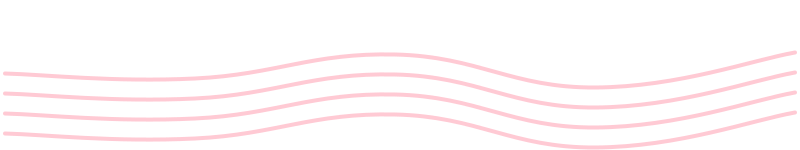
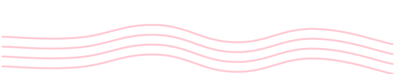

< Back
WEBKOI Patch Notes
I'm excited to show off what's been updated! Thanks for supporting WEBKOI, and stay tuned for even more content!
V1.2.1
Major Content Update!
August 1st, 2025
Features:
2 new ponds! Crystal and Chroma ponds!
5 new new rarities! Chromatic, Crystalline, Cursed, Void, and Verdant!
Be careful... Fortune comes at a steep price...
2 new items, for helping with curses and voids.
Bugfixes:
Fixed weird color transitions.

V1.2.0
Major UI Rework!
July 31st, 2025
Features:
Complete Rework of WEBKOI!
Better Code, New UI, Hotkeys, etc!
UI now reflects the color of the current pond.
Navigation is now seperate from the menu, and now has icons.
You can now sell items.
Upgrades are now based on a price multiplier per pond.
Upgrades are now modular per pond, each with unique upgrades. (that don't exist)
Rebalanced speed upgrade.
New settings UI.
The player is now colored based on the current pond.
There are so many more updates, I just forgot to keep track of them all.
WEBKOI is now in an acceptable state!
Bugfixes:
Renamed elements for cleanliness.
Fixed pond switching bugs resetting the screen.
Lore now cycles properly.
A ton of other bugs have been fixed as well :3
Site Changes:
Removed Roadmap. It wasn't very useful/updated often.

V1.1.1
Fish Pixel Art!
July 22nd, 2025
Features:
Fish Pixel art! There are now around 60 fish images. (the rest coming over the next few days)
These images are displayed when inspecting a fish, catching a fish, and in the compendium.
Lore! You can know fish up forgotten notes, and read their contents.
V1.1.0
Compendium Update!
July 21st, 2025
Compendium:
Introducing the compendium! Check which fish you've caught, how many, and those you haven't.
Get hints as to which pool each fish spawns in, including those you haven't caught.
Each fish rarity has it's own hints, quotes, etc.
Added fish images! only the first 11 so far, but more will be added soon.
Other Features:
Quick Keybinds! Each menu now has it's own keybind.
You can check each keybind in the settings menu.
Keybinds exist for inventory, market, upgrades, and the compendium.
Fixes:
When loading your inventory, non-existent fish will be destroyed.
The caught fish count no longer increments if you fish up a chest.
V1.0.1a
Minor Patch
July 16th, 2025
Features:
Added chests and keys, and items now sort to the right.
Updated weights to include items.
The color of fish alerts/inspection now reflects the rarity of fish caught.
Autofishers are now colored based on the current pond!
Refactored inventory system.
Better Rarity Info handling
You can now toggle fish alerts on or off.
Pushed the total fish count to 205.
Fixes:
Added some version redundancy.
Fixed game breaking issue where holding down space bar deleted fish from inventory.
V1.0.1
Minor Patch
July 15th, 2025
Features:
Added a pond selection menu, opened by pressing
F
.
Added a Sell All button to the fish inventory for easier selling.
Redid the upgrade UI. (rows instead of column based)
Borders are now more subtle and less intrusive.
You can now check the hotkeys in the settings menu!
Added a new pond, a new fish rarity, with 8 different fish.
Renamed the Night rarity and pond to "Twilight" for future time-based fishing.
V1.0.0
WEBKOI's public release!
July 14th, 2025
Welcome to the public release of WEBKOI! Build your koi collection, explore vibrant ponds, and discover the peaceful joy of fishing.
Features:
Catch fish, Upgrade your fishing speed, buy autofishers, sell fish, discover different rarities, etc.
Explore 5 different unique ponds, each with their own special colors and unique fish.
64 fish, with 8 different rarities (tons more to come!)
Ambience music. (3 tracks)
Quote ticker (20 quotes)
sound effects
Site Changes:
Added a changelog.
Added a public roadmap.
Added a donations link.
favicon, SEO, sitemap, meta tags.